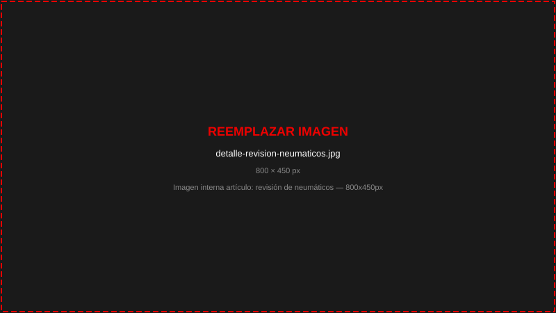

Dar mantenimiento a tiempo a tu Mitsubishi no es solo una recomendación del fabricante: es la diferencia entre un auto confiable durante años y uno que acumula fallas costosas. En esta guía te explicamos exactamente qué revisiones necesitas y cuándo realizarlas.
¿Por qué es importante el mantenimiento regular?
Los vehículos Mitsubishi están diseñados para ofrecer durabilidad y rendimiento superiores, pero ese desempeño depende en gran medida de los cuidados preventivos. Un mantenimiento adecuado:
- Previene fallas mecánicas inesperadas que pueden dejarte varado.
- Mantiene la garantía de fábrica vigente.
- Mejora el rendimiento de combustible hasta en un 15%.
- Preserva el valor de reventa del vehículo.
- Garantiza la seguridad de todos los ocupantes.
Un Mitsubishi bien mantenido puede alcanzar fácilmente 300,000 km o más. La clave está en respetar los intervalos de servicio desde el primer día.
Calendario de mantenimiento Mitsubishi
Mitsubishi establece un programa de mantenimiento escalonado basado en kilómetros recorridos. A continuación, los intervalos clave para la mayoría de sus modelos:
Servicio menor (cada 5,000 – 10,000 km)
- Cambio de aceite y filtro de aceite.
- Revisión de niveles de fluidos (refrigerante, frenos, dirección, limpiaparabrisas).
- Inspección visual de neumáticos y presión.
- Revisión de iluminación y seguridad.
Servicio intermedio (cada 20,000 km)
- Todo lo del servicio menor.
- Sustitución del filtro de aire del motor.
- Inspección del sistema de frenos.
- Rotación de neumáticos.
- Revisión del sistema de escape.
Servicio mayor (cada 40,000 km)
- Revisión o sustitución de bujías.
- Inspección de la banda de distribución.
- Cambio de filtro de combustible.
- Revisión completa del sistema de suspensión.
- Diagnóstico electrónico completo (OBD-II).
- Revisión del sistema de enfriamiento.
Revisiones esenciales en cada servicio
Más allá del kilometraje, existen componentes que requieren atención constante sin importar cuántos kilómetros tenga tu vehículo:
Sistema de frenos
Las pastillas de freno deben revisarse al menos cada 20,000 km. En ciudad, donde el tráfico provoca frenadas frecuentes, el desgaste puede ser hasta el doble que en carretera. Si escuchas chirridos o sientes vibración al frenar, acude al taller de inmediato.
Neumáticos
La profundidad mínima del dibujo legal es de 1.6 mm, pero Mitsubishi recomienda sustituir los neumáticos cuando lleguen a 3 mm para garantizar la adherencia óptima, especialmente en lluvia. La presión correcta también mejora hasta un 8% el consumo de combustible.

Batería
La vida útil promedio de una batería automotriz es de 3 a 5 años. Los síntomas de una batería débil incluyen arranques lentos, luz de batería encendida y accesorios eléctricos que funcionan con menos potencia. No esperes a quedarte sin batería: una revisión de carga es rápida y gratuita en Interlomas.
Señales de alerta que no debes ignorar
Aunque respetes el calendario de mantenimiento, algunos síntomas requieren atención inmediata:
- Luz de motor encendida: puede indicar desde una tapa de gasolina mal cerrada hasta una falla grave.
- Humo del escape: el humo azul indica consumo de aceite; el blanco puede señalar refrigerante quemado.
- Vibraciones o jaleos: pueden ser síntoma de problemas en la transmisión, juntas o semieje.
- Olor a quemado: especialmente al frenar, puede indicar pastillas o discos con desgaste severo.
- Pérdida de potencia: bujías, filtro de combustible o sistema de inyección pueden estar afectados.